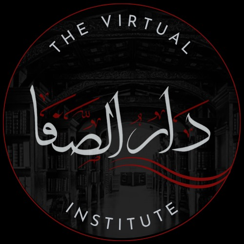

Courses
Explore our best of the institutes that affiliated with us

Dar al-Safa answers that call in the digital age, bringing Islamic institutions and seekers together in one place, with clarity, credibility, and compassion.
Explore CoursesWe collaborate with best and reputated institutions
This verse (Surah Fussilat 41:33) reminds us that the highest form of speech is one that invites others to Allah with wisdom, sincerity, and compassion. Sharing authentic Islamic knowledge is not just a noble act it’s a responsibility and a form of da’wah that carries immense reward. At Dar al-Safa, we aim to make this calling accessible by connecting seekers with trusted sources of ilm in the digital age.
Some of the handpicked courses from our best of the institutes
Books that serve hearts, minds, and sincere intentions
Explore our digital library filled with authentic Islamic books available anytime, anywhere.
| Sr no. | Title | Author | Category | Language |
|---|---|---|---|---|
| #01 | Riyadh as-Salihin | Imam an-Nawawi | Hadith | English |
| #02 | Fiqh-us-Sunnah | Sayyid Sabiq | Fiqh | English |
| #03 | Al-Aqidah al-Tahawiyyah | Imam al-Tahawi | Aqeedah | Arabic |
| #04 | Tafsir Ibn Kathir | Ismail Ibn Kathir | Tafsir | Arabic |
| #05 | Sahih al-Bukhari | Imam al-Bukhari | Hadith | Urdu |
| #06 | Sharh al-Aqeedah al-Wasitiyyah | Ibn Taymiyyah | Aqeedah | Arabic |
| #07 | Nihayat al-Muhtaj | Al-Ramli | Fiqh (Shafi’i) | Arabic |
| #08 | Zad al-Ma'ad | Ibn al-Qayyim | Seerah / Manners | Arabic |
| #09 | Bulugh al-Maram | Ibn Hajar al-Asqalani | Hadith | English |
| #10 | Al-Muwatta | Imam Malik | Hadith / Fiqh | Arabic |
"Dar al-Safa has completely changed how I seek knowledge. I used to feel overwhelmed by scattered content online, but now I have a clear, trustworthy path to study from real teachers and institutes."
"As a madrasa administrator, I found Dar al-Safa to be the perfect digital extension of our institution. It allows us to reach students globally without compromising the authenticity of our curriculum."
"I stumbled upon Dar al-Safa while searching for Islamic books. What I found was more than just a library—it’s a complete platform that respects tradition while embracing technology. Highly recommended!"
"Seeking knowledge is an obligation upon every Muslim."
— Prophet ﷺThe Prophet ﷺ said, “Whoever guides someone to goodness will have a reward like one who did it.” This timeless hadith reminds us that spreading beneficial knowledge is not only encouraged it’s rewarded as though we performed the good ourselves. Help us to reach more people by sharing our platform but for the sake of Allah.